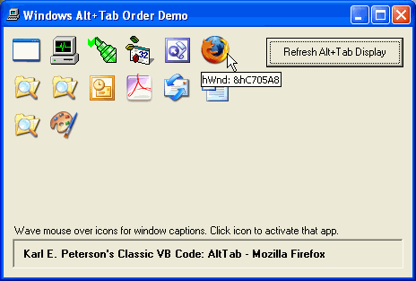

Description
Windows commonly uses one of two strategies to compile lists of running
applications. These are seen most often in the Alt-Tab dialog and in Task
Manager's Applications tab. The drop-in ready CTaskList class offered by this
sample offers both definitions, and supplies a sorted array of properties to
offering hWnd, hIcon (regular and small), and Caption for each top-level
application. This sample, as you might guess by the name, revolves around
recreating the Alt-Tab dialog to a degree, and augmenting it with a bit more
information as shown here:

The assumptions and tests used to determine where each top-level window fits
in the application order (and whether it's even to be considered an
"application" at all) are rather well described in the columns linked to below.
Here, though, is the guts of the decision process:
 |
Private Function IsTask(ByVal hWnd As Long) As Boolean
Dim hWndOwner As Long
Select Case m_Mode
' Special thanks to Jonathan Wood <http://www.softcircuits.com>
' for pointing out that the Alt+Tab order is the same as returned
' by a GetWindow loop.
Case tlAltTab
' Must be visible.
If IsWindowVisible(hWnd) Then
' Can't have Parent.
If GetParent(hWnd) = 0 Then
' Can't have Owner *except* in the case where
' owner has WS_EX_TOOLWINDOW StyleEx bit set.
' This is how VB apps (and others?) operate.
hWndOwner = GetWindowLong(hWnd, GWL_HWNDPARENT)
If (hWndOwner = 0) Or IsToolWindow(hWndOwner) Then
' Must not be Toolwindow.
If Not IsToolWindow(hWnd) Then
' We have a winner!
IsTask = True
End If
End If
End If
End If
' Apply TaskMgr tests to passed window:
Case tlTaskMgr
' Must be visible.
If IsWindowVisible(hWnd) Then
' Can't have Parent.
If GetParent(hWnd) = 0 Then
' And, finally, it shouldn't have an owner.
If GetWindowLong(hWnd, GWL_HWNDPARENT) = 0 Then
' TaskMgr shows all ToolWindows
' *except* Program Manager.
If IsToolWindow(hWnd) Then
If Classname(hWnd) <> "Progman" Then
' We have a winner!
IsTask = True
End If
Else
' We have a winner!
IsTask = True
End If
End If
End If
End If
End Select
End Function
So, there you have it. Read the articles below, if you're interested in more
details on the tests implemented to build these arrays, or just drop the
CTaskList class module into one of your projects and start using it.
Published
This sample, or the one from which it originally derived, was published (or at least
peripherally mentioned) in the following article(s):
APIs Usage
This sample uses the following API calls:
| Module |
Library |
Function |
| CTaskList.cls |
user32
|
GetClassLong
GetClassName
GetForegroundWindow
GetParent
GetTopWindow
GetWindow
GetWindowLong
GetWindowText
IsIconic
IsWindow
IsWindowVisible
LoadIcon
SendMessage
SendMessageTimeout
SetForegroundWindow
ShowWindow |
| TabOrder.frm |
user32
|
DrawIcon
GetKeyState
GetSystemMetrics |
Don't see what you're looking for? Here's a
complete API cross-reference.
Download

|
|
Please, enjoy and learn from this sample. Include its code within your own projects, if you wish. But, in order to insure only the most recent code is available to all, I ask that you
don't share the sample by any form of mass distribution.
Download AltTab.zip,
13Kb, Last Updated: Tuesday, June 13, 2000
|
See Also
The following resources may also be of interest:
- TaskList - Recreation of Task Manager's Applications tab shows how to properly terminate processes.

|